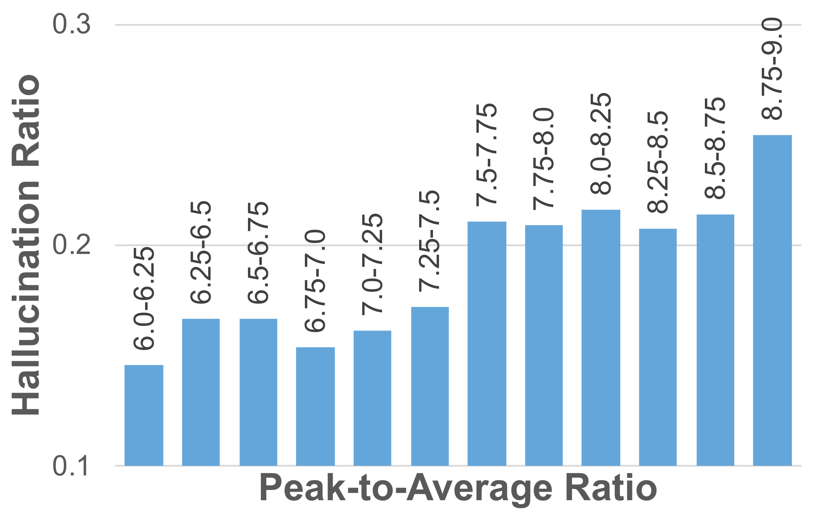
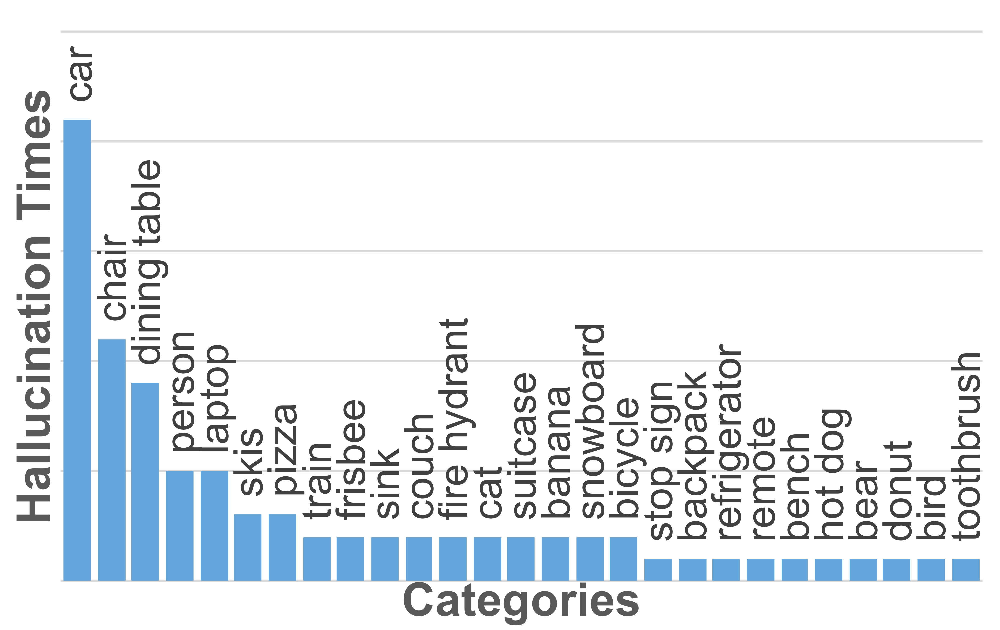
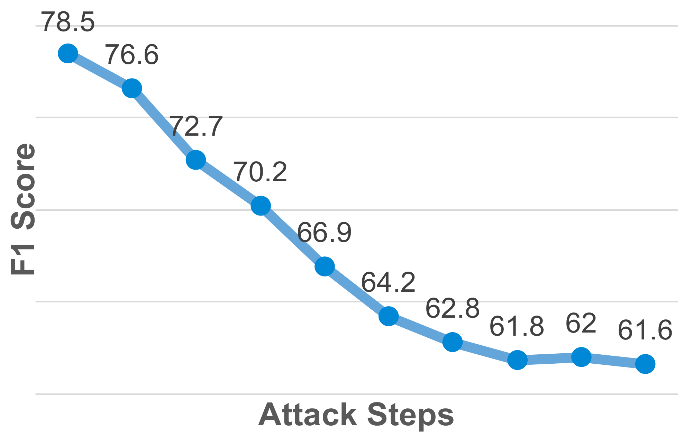
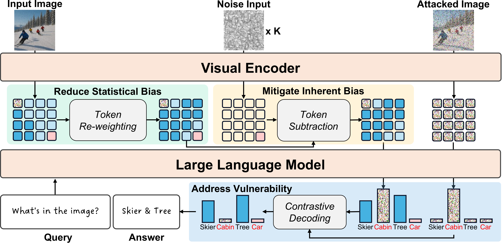
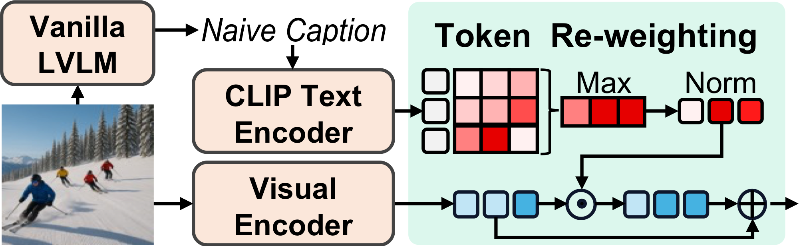
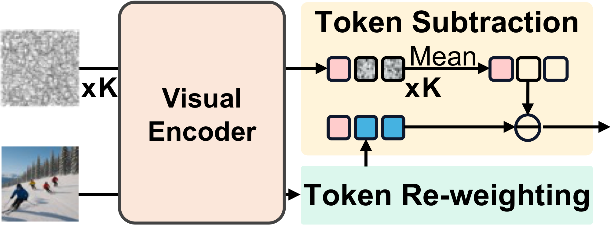
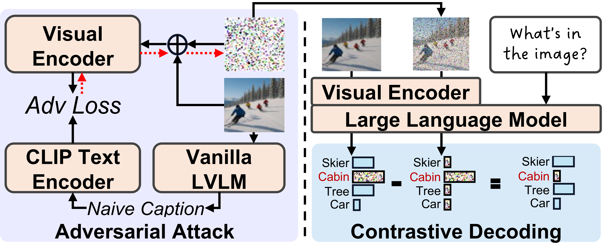
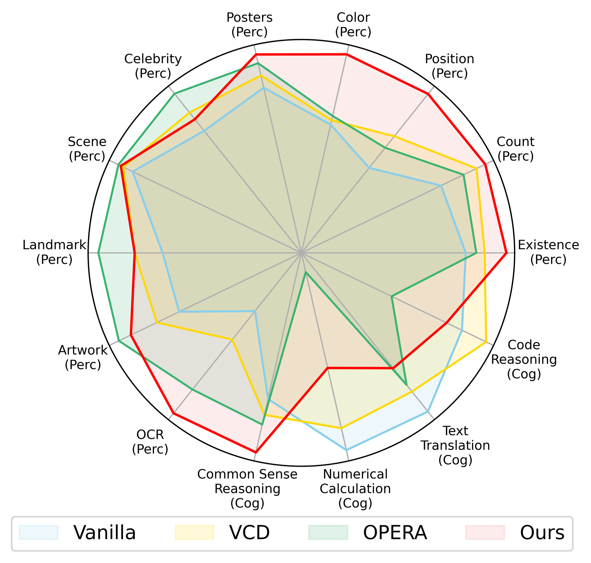

Abstract
Large Vision-Language Models (LVLMs) excel in diverse cross-modal tasks. However, object hallucination — where models produce plausible but inaccurate object descriptions — remains a significant challenge. In contrast to previous work focusing on LLM components, this paper is the first to trace LVLM hallucinations to visual encoders and identifies three key issues: statistical bias, inherent bias, and vulnerability. To address these challenges, we propose SHIELD, a training-free framework that mitigates hallucinations through three strategies: re-weighting visual tokens to reduce statistical bias, introducing noise-derived tokens to counter inherent bias, and applying adversarial attacks with contrastive decoding to address vulnerability. Experiments demonstrate that SHIELD effectively mitigates object hallucinations across diverse benchmarks and LVLM families. Moreover, SHIELD achieves strong performance on the general LVLM benchmark, highlighting its broad applicability.
Motivation: Hallucinations Stem from Visual Encoders
Accurate visual feature extraction is crucial for LVLMs to generate reliable outputs. However, we find that bias and vulnerability in visual encoders distort features and intensify object hallucinations. Most LVLMs adopt visual encoders derived from pretrained CLIP models, which are influenced by the imbalanced distribution of visual concepts in pretraining data. This gives rise to three key issues:
Statistical Bias
The visual encoder over-relies on frequent visual patterns in pretraining data, causing overemphasis on the corresponding tokens with disproportionately high activation values. This distorts fine-grained perception by directing attention to overweighted tokens, often resulting in hallucinations.

Inherent Bias
The visual encoder is overdependent on dominant objects in pretraining data, leading it to generate erroneous representations regardless of input — even when the input is meaningless random noise. Dominant objects such as cars, chairs, and tables are frequently hallucinated.

Vulnerability
Visual encoders have limited robustness to noise and subtle perturbations, making them susceptible to constructing inaccurate visual representations. Even a few attack steps cause sharp performance drops, demonstrating that minor perturbations can exploit this weakness.

Method
Building on these observations, we propose SHIELD, a training-free method to mitigate object hallucinations by addressing statistical bias, inherent bias, and vulnerability in visual encoders. SHIELD integrates three strategies that operate directly on visual tokens and decoding logits — no model retraining required.

Overview of the SHIELD framework. Our training-free approach addresses all three encoder issues via token re-weighting, token subtraction, and contrastive decoding.

Token Re-weighting
Generates a naive caption, encodes it with the CLIP text encoder, and computes a similarity matrix with visual tokens. The resulting weights redistribute attention across tokens relevant to ground-truth objects, alleviating statistical bias from overemphasized tokens.

Token Subtraction
Passes K random noise inputs through the visual encoder and averages the resulting tokens to estimate erroneous representations of dominant objects. These estimates are subtracted from the visual tokens, removing inherent bias at the feature level.

Contrastive Decoding
Constructs an adversarial attack tensor by minimizing cosine similarity between perturbed image features and caption features. At each decoding step, contrasts bias-reduced logits with adversarial logits to suppress hallucination-prone outputs.
Results
CHAIR (LLaVA-1.5) ↓ lower is better
| Method | CS | CI |
|---|---|---|
| Vanilla | 48.8 | 14.2 |
| VCD | 46.8 | 13.2 |
| OPERA | 44.6 | 12.8 |
| SHIELD | 36.6 | 10.3 |
POPE Avg (LLaVA-1.5) ↑ higher is better
| Method | Acc | F1 |
|---|---|---|
| Vanilla | 81.3 | 79.6 |
| VCD | 84.6 | 84.4 |
| OPERA | 84.7 | 85.4 |
| SHIELD | 87.0 | 87.4 |
MME Hallucination ↑ higher is better
| Method | LLaVA-1.5 | InstructBLIP | Qwen-VL |
|---|---|---|---|
| Vanilla | 565.3 | 380.3 | 587.3 |
| VCD | 604.6 | 447.6 | 596.6 |
| OPERA | 592.3 | 384.3 | 623.3 |
| SHIELD | 668.3 | 461.6 | 668.3 |
AMBER Score (LLaVA-1.5) ↑ higher is better
| Method | Score | CHAIR↓ | Hal.↓ |
|---|---|---|---|
| Vanilla | 82.0 | 9.2 | 29.2 |
| VCD | 82.9 | 8.1 | 28.6 |
| OPERA | 86.5 | 8.3 | 31.2 |
| SHIELD | 88.0 | 6.4 | 25.1 |
POPE COCO — All Splits, All LVLMs
| LVLM | Method | Random | Popular | Adversarial | |||
|---|---|---|---|---|---|---|---|
| Acc | F1 | Acc | F1 | Acc | F1 | ||
| LLaVA-1.5 | Vanilla | 83.2 | 81.3 | 81.8 | 80.0 | 78.9 | 77.5 |
| VCD | 87.7 | 87.1 | 85.3 | 85.0 | 80.8 | 81.3 | |
| OPERA | 89.1 | 89.0 | 86.0 | 86.3 | 79.1 | 80.9 | |
| SHIELD | 91.3 | 91.1 | 87.4 | 87.6 | 82.5 | 83.6 | |
| InstructBLIP | Vanilla | 80.7 | 80.4 | 78.2 | 78.3 | 75.8 | 76.5 |
| VCD | 84.5 | 83.6 | 81.4 | 81.0 | 79.5 | 79.5 | |
| OPERA | 89.8 | 89.6 | 83.4 | 84.0 | 80.7 | 81.8 | |
| SHIELD | 88.2 | 87.6 | 84.6 | 84.3 | 82.2 | 82.4 | |
| Qwen-VL | Vanilla | 84.7 | 82.6 | 84.1 | 82.0 | 82.2 | 80.3 |
| VCD | 88.6 | 87.8 | 87.1 | 86.4 | 84.2 | 83.9 | |
| OPERA | 86.1 | 84.2 | 85.7 | 83.8 | 83.9 | 82.1 | |
| SHIELD | 89.2 | 88.6 | 87.6 | 87.1 | 84.3 | 84.2 | |
MME Full (LLaVA-1.5 7B) ↑
| Method | Perception | Cognition | Total |
|---|---|---|---|
| Vanilla | 1279.2 | 352.9 | 1632.1 |
| VCD | 1363.9 | 353.2 | 1717.1 |
| OPERA | 1413.0 | 304.2 | 1717.2 |
| SHIELD | 1473.0 | 337.8 | 1810.8 |
Efficiency (LLaVA-1.5 7B, CHAIR)
| Method | CS↓ | Time (s) | Memory |
|---|---|---|---|
| Vanilla | 48.8 | 2.59 | 15.69 GB |
| VCD | 46.8 | 4.89 | 16.52 GB |
| OPERA | 44.6 | 24.01 | 34.88 GB |
| SHIELD | 36.6 | 7.34 | 18.17 GB |

MME Full benchmark radar chart. SHIELD improves perception across all sub-categories while maintaining cognition performance.
Qualitative Examples
Ablation Visualization
Effect of each SHIELD module on attention distribution and generated captions. Each module progressively corrects a different source of hallucination.
Case Studies
Detailed comparisons between Vanilla LLaVA-1.5 and SHIELD. Hallucinated objects are highlighted in red, correct descriptions in green.
Code
SHIELD works as a non-invasive wrapper. Just three lines to integrate:
import shield from llava.model.builder import load_pretrained_model # Load model as usual tokenizer, model, image_processor, _ = load_pretrained_model( "liuhaotian/llava-v1.5-7b", None, "llava-v1.5-7b" ) # One-line SHIELD setup shield.wrap(model, tokenizer, caption_file="experiments/first_cap/llava15_coco_pope_first_caption.jsonl", cd_alpha=2.0, cd_beta=0.35, ) # Generate with SHIELD shield_kw = model.shield_prepare(image, image_tensor, "image.jpg", use_cd=True) output_ids = model.generate(input_ids, **shield_kw, do_sample=True, max_new_tokens=1024)
See the GitHub repository for full installation instructions, data preparation, and evaluation scripts.
BibTeX
If you find this work useful, please cite our paper:
ICLR version:
@inproceedings{
huang2026shield,
title={{SHIELD}: Suppressing Hallucinations In {LVLM} Encoders via Bias and Vulnerability Defense},
author={Yiyang Huang and Liang Shi and Yitian Zhang and Yi Xu and Yun Fu},
booktitle={The Fourteenth International Conference on Learning Representations},
year={2026},
url={https://openreview.net/forum?id=yk7FFLoNcP}
}
arXiv version:
@article{huang2025shield,
title={SHIELD: Suppressing Hallucinations In LVLM Encoders via Bias and Vulnerability Defense},
author={Huang, Yiyang and Shi, Liang and Zhang, Yitian and Xu, Yi and Fu, Yun},
journal={arXiv preprint arXiv:2510.16596},
year={2025}
}